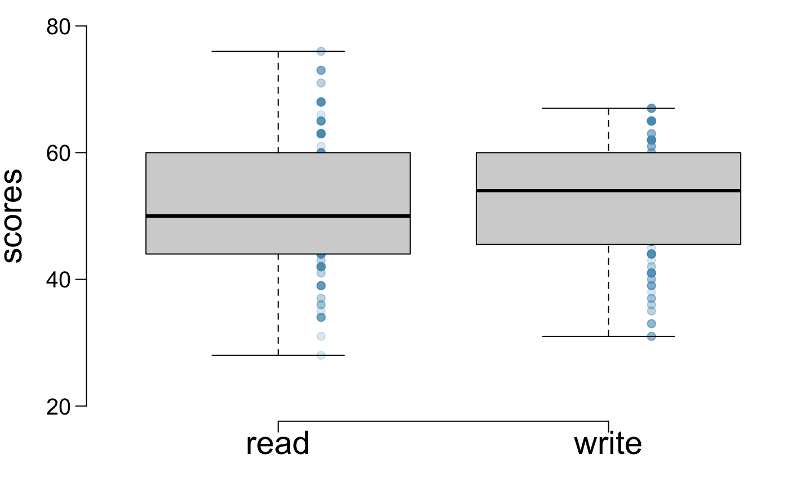
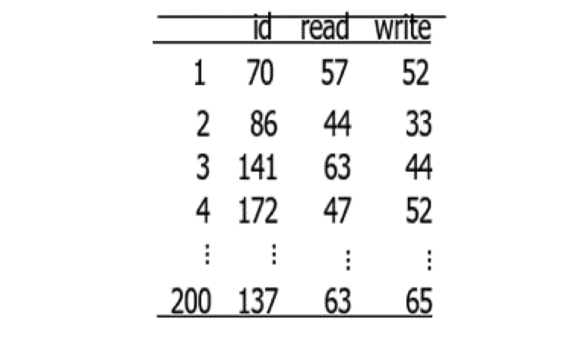
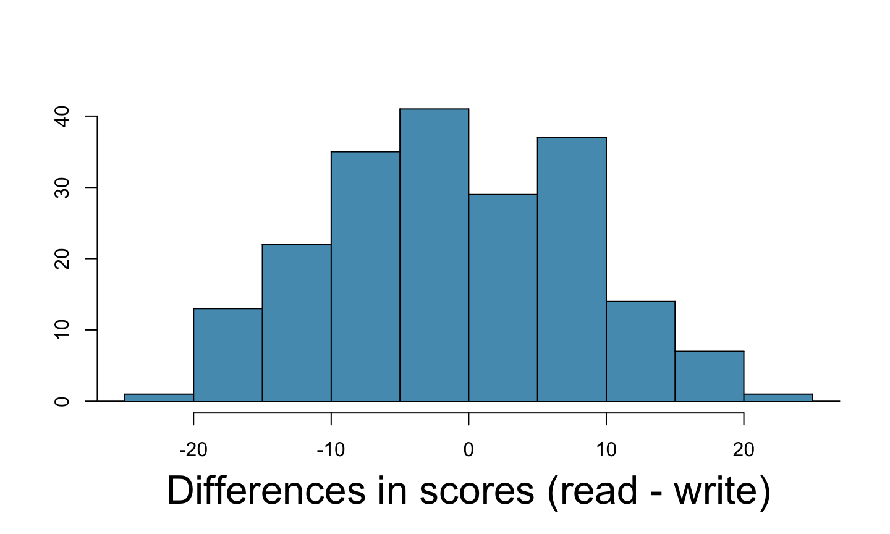
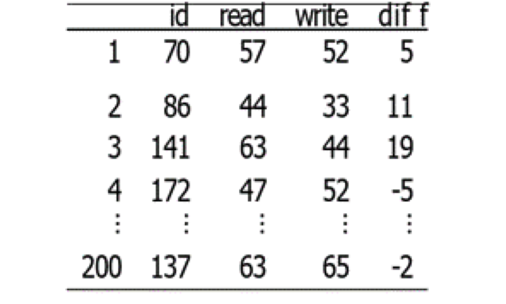
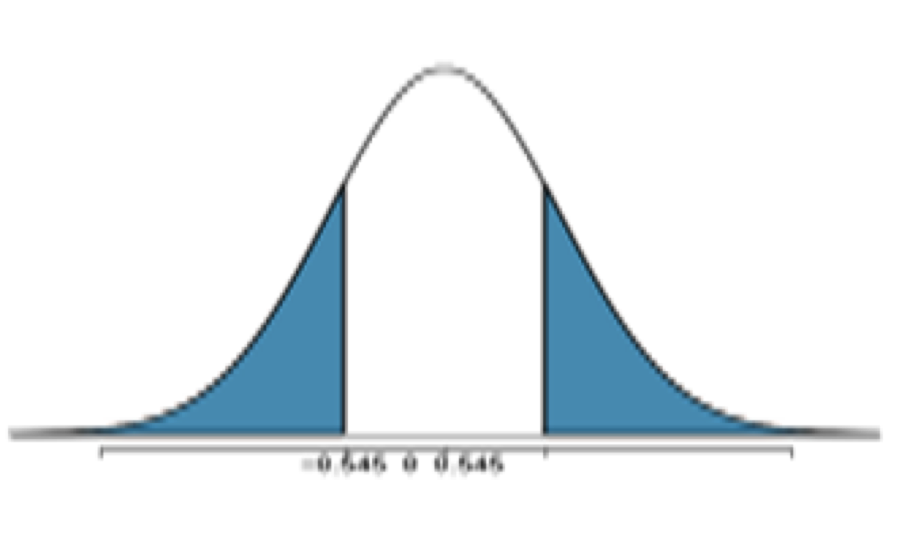
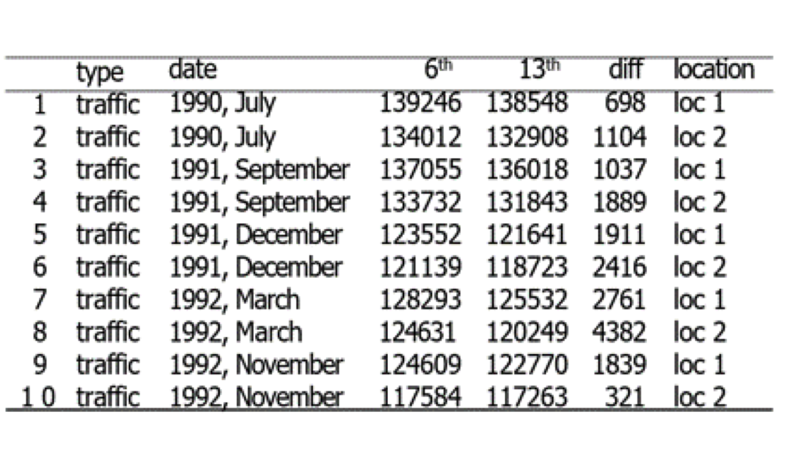

These notes use content from OpenIntro Statistics Slides by
Mine Cetinkaya-Rundel.
These notes use content from OpenIntro Statistics Slides by
Mine Cetinkaya-Rundel.
Paired data –Two sets of observations are paired if each observation in one set has a special correspondence or connection with exactly one observation in the other data set.
To analyze a paired data, we simply analyze the differences of each pair of observations.
We use the contents of 7.1 to discuss two examples about the difference of paired observations.


To analyze paired data, we look at the difference in outcomes of each pair of observations. For our example, diff = read − write


The analysis is no different than what we have done before.
We have data from one sample: differences.
Parameter of interest: Average difference between the reading and writing scores of all high school students. \(𝜇_{diff}\)
point estimate: Average difference between the reading and writing scores of sampled high school students. \(\bar{x}_{diff}\)
For the paired test scores, We would like to test to see if average difference is different than 0.
Hypotheses
For testing if there is a difference between the average reading and writing scores, we have hypotheses
\(𝐻_0\) ∶ There is no difference between the average reading and writing score.\(𝜇_{diff}\) = 0
\(𝐻_a\) ∶ There is a difference between the average reading and writing score.\(𝜇_{diff}\ne\) 0
Checking assumptions & conditions
Since students are sampled randomly and are less than 10% of all high school students, we can assume that the difference between the reading and writing scores of one student in the sample is independent of another.
The observed average difference between the two scores is −0.545 points and the standard deviation of the difference is 8.887 points.
Do these data provide convincing evidence of a difference between the average scores on the two exams? Use 𝛼 = 0.05.
Recall n= 200, as \(\sigma\) is unknown; Compute t test statistic
\(𝑡=\frac{−0.545−0}{8.887/\sqrt{200}}=0.8673\)
P – value
With \(df\)=200−1=199
\(𝑃(|𝑇|>0.86732)=2∗𝑃(𝑇<−0.8673)=2∗𝑃(𝑇>0.8673) =2∗0.1934=0.38\)

Conclusion
As the P-value > 0.05, we failed to reject \(𝐻_0\). The data do not provide convincing evidence of a difference between the average reading and writing scores.
The interpretation of the p-value P- value is 0.3868.
\(=P(|𝑇| > 0.86732)\)
\(=P(𝑇<−0.86732 \hspace{0.2cm} \text{or} \hspace{0.2cm} 𝑇>0.86732)\)
\(=𝑃(\bar{X} <−0.545 \hspace{0.2cm} \text{or} \hspace{0.2cm} \bar{X}>0.545)\) (Note: the mean is 0)
So the p-value is the probability of obtaining a random sample of 200 students where the average difference between the reading and writing scores is at least 0.545 more or less is 0.3868, if it assumes that the true average difference between the scores is 0.
Decision
Because the p-value is large, so the data does not provide strong evidence to reject the null hypothesis to support the alternative hypothesis: we do not see the average difference is different than 0.
Suppose we were to construct 95% confidence interval for the average difference between the reading and writing scores. Would you expect this interval to include 0?
The choice is A)–b/c HT failed to reject \(𝐻_0\)
Check:
The 95% CI is \(\bar{x} \pm 𝑡_{0.025} \times \frac{s}{\sqrt{n}}\)
with \(df\)=199, \(t_{0.025}=1.972\) (use TI 84 Calculator or R to check)
CI : \({−0.545} \pm 1.972 \times \frac{8.887}{\sqrt{200}}\),
(−1.784, 0.694) which contains 0.
So, we cannot reject \(H_0\) to support \(H_a\)
Between 1990 - 1992 researchers in the UK collected data on traffic flow, accidents, hospital admissions on Fridays \(13^{th}\) and the previous Fridays, Friday \(6^{th}\). Below is this data set on traffic flow. We can assume that traffic flow on given day at locations 1 and 2 are independent

We want to investigate if people’s behavior is different on Friday \(13^{th}\) compared to Friday \(6^{th}\).
Hypotheses
\(H_0\) ∶ Average traffic flow on Friday \(6^{th}\) and\(13^{th}\) are equal.
\(H_a\) ∶ Average traffic flow on Friday \(6^{th}\) and\(13^{th}\) are different.
\(𝐻_0 ∶ 𝜇_{diff}= 0\)
\(𝐻_𝐴 ∶ 𝜇_{diff}\ne 0\)
The difference data: 698 1104 1037 1889 1911 2416 2761 4382 1839 321
data <- c(698,1104,1037,1889,1911,2416,2761,4382,1839,321) xbar <- mean(data);xbar; s= sd(data);s
Data Summary: \(n\)=10, \(\bar{x}\)=1836, \(s\)=1176
The t-test statistic \(𝑡=\frac{1836−0}{1176/\sqrt{10}}=4.937\)
The P-value is, with \(df\) =𝟗,\(𝑃(|𝑇|>4.937)=2∗𝑃(𝑇>4.937)=0.0008055524\)
The conclusion: Since the p-value is quite low, we conclude that the data provide strong evidence to support that there is a difference between traffic flow on Friday \(6^{th}\) and \(13^{th}\).
We concluded that there is a difference in the traffic flow between Friday \(6^{th}\) and \(13^{th}\) at the significance level \(\alpha=0.05\).
We can use a 95% confidence interval to estimate this difference.
For \(df\)=9, \(𝑡_{0.025}=2.2622\) the 95 CI is: \(1836\pm 2.2622 \times \frac{1176}{\sqrt{10}}\), that is, (995, 2677)
As the CI does not contain the null value 0, we reject \(H_0\) and substantiated \(H_a\). This conclusion using confidence interval agrees with the findings using P-value.